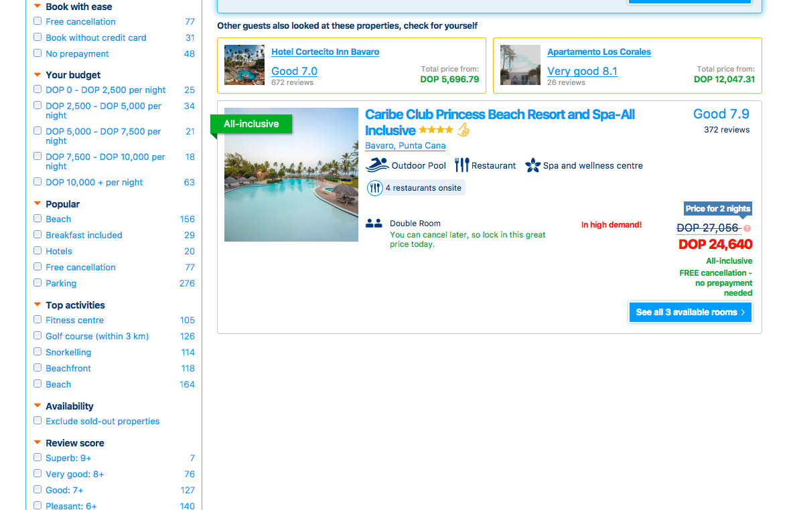
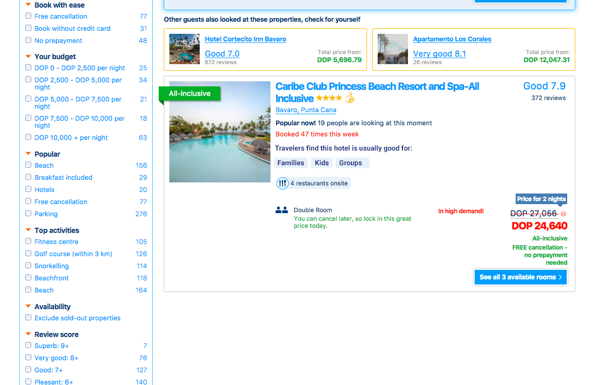
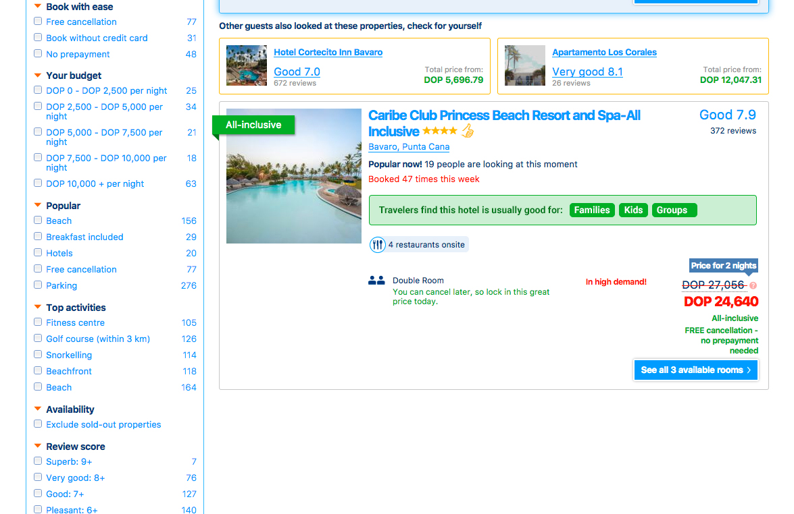

Presenting 4 ideas of actionable improvements that can be made to the site.
← Go backThe huge amount of information on the internet is overwhelming, people want better information, not more information. The first thing they ask when buying an experience goes on the lines of: What's the best hotel I can find to have a memorable experience with my wife and two kids for this holiday at Punta Cana? To navigate the ocean of hotels available to get that answer is a hard task.
Every hotel at Punta Cana will tell you that you will have a wonderful time with your family there, but that's not true and the consumer knows it.
So, how could we help consumers book that experience faster, not having to spend that much time comparing too many sites and too many options?
Bookings can increase from the search results page if we use data from other travelers reviews to help consumers to discern what hotels are best for the experience they want to have.
Booking.com current state This is the current design on booking.com
On the Search results, I propose to try presenting tags travelers usually use to define what's this hotel better for.
Another iteration we can try if the hypothesis is not validated or the results are uncertain
If the hypothesis is validated, Continue "milking the cows", go to next item and improve another part of the website.
If the hypothesis is not validated, iterate or pivot. Reshape ideas. Try iterating to the 2nd option I propose.
If the results of test are uncertain, iterate. Reshape ideas